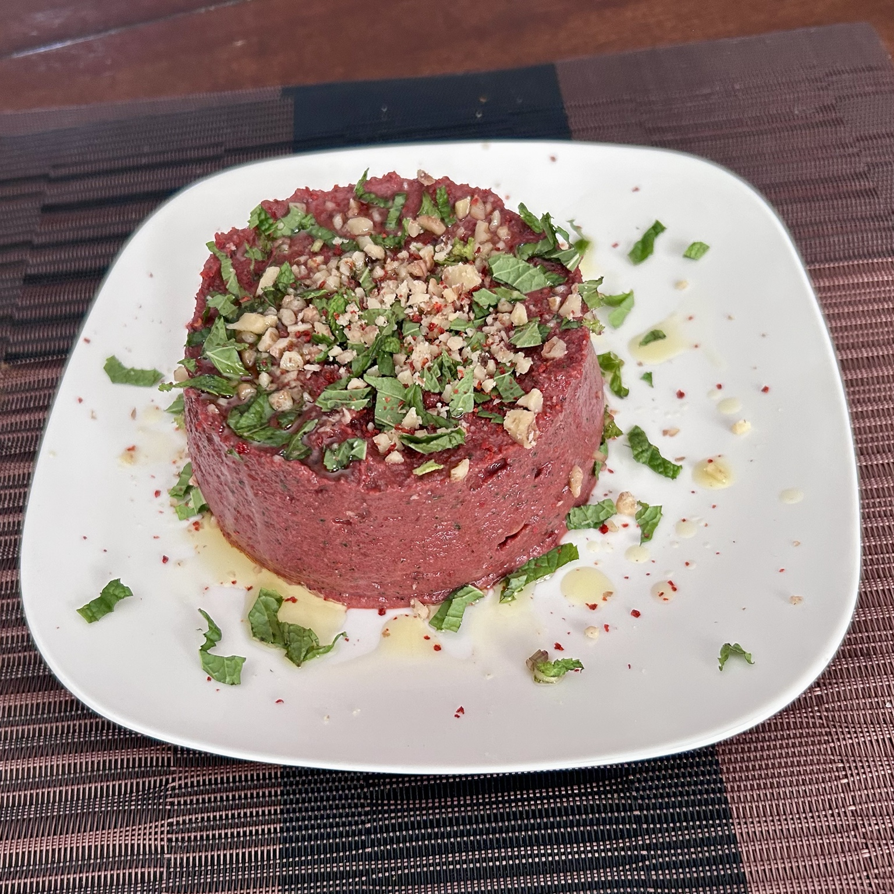

Side
Beet Pkhali
A Georgian beet and walnut spread with garlic, coriander, and pomegranate molasses.

Ingredients
- 5 red beets, about 1 lb, cooked
- 1/2 cup roughly chopped fresh cilantro, leaves and stems
- 4 cloves garlic
- 1/3 cup walnuts
- 1/4 tsp cayenne, plus more to taste
- 1/2 tsp ground cumin
- 1/2 tsp kosher salt, plus more to taste
- 1/2 tsp freshly ground black pepper
- 1 tbsp pomegranate molasses
- Croutons, as needed
For garnish
- Pomegranate seeds
- Fresh mint
- Walnuts
Method
- Put the cooked beets, cilantro, garlic, walnuts, cayenne, cumin, salt, black pepper, pomegranate molasses, and croutons into a food processor.
- Blend to the texture you like, keeping it slightly coarse if preferred.
- Taste and adjust the salt and cayenne.
- Transfer to a serving bowl and garnish with pomegranate seeds, fresh mint, and walnuts.
Serving
Serve as a spread or dip with bread, crackers, or as part of a larger mezze-style plate.
Notes
The croutons can be used to adjust the texture and absorb excess moisture. Keep the finished pkhali textured rather than completely smooth.